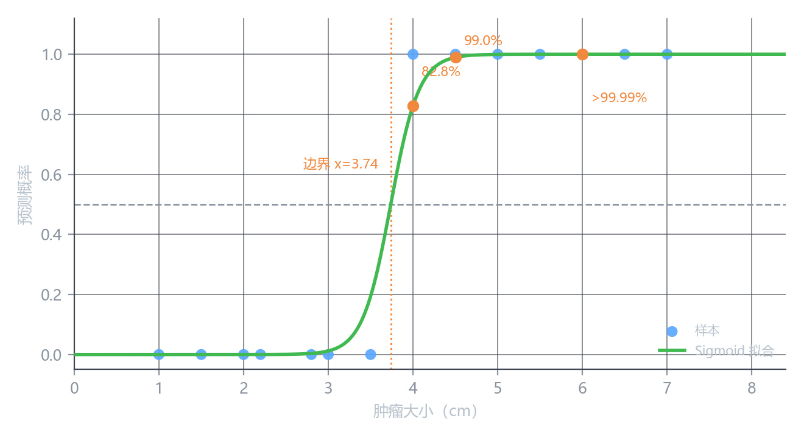
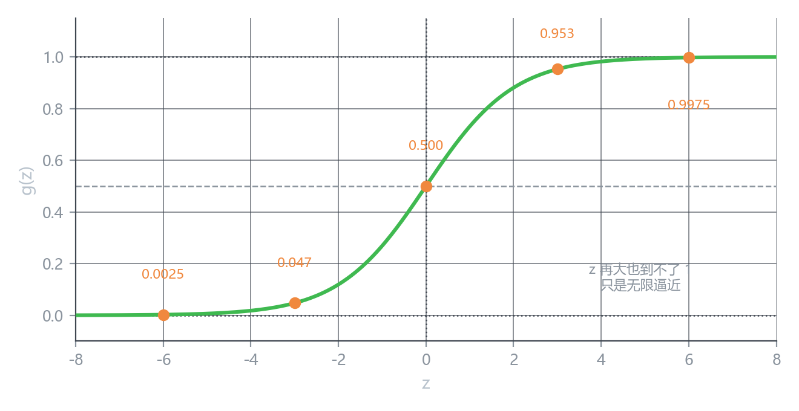
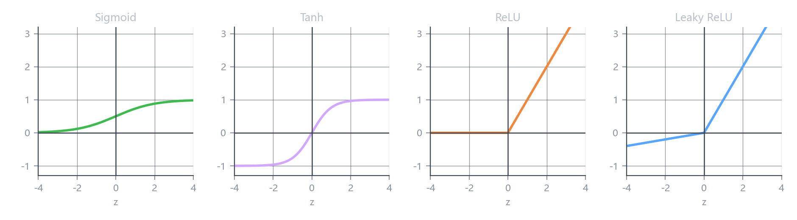
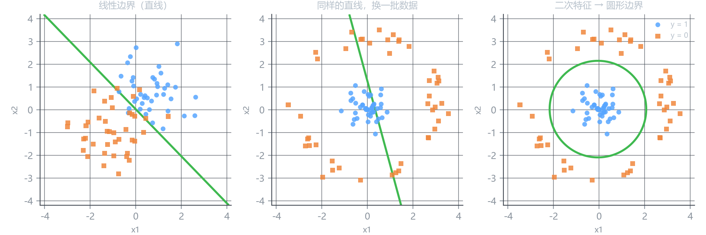

逻辑回归与 Sigmoid
先看结果
上一课说直线做不了分类。那换成一条 S 形的曲线呢？

这条绿线有几个特点，值得一个个看：
一、它永远在 0 和 1 之间。 不管肿瘤大小是多少，预测值不会变成 1.3，也不会变成 −0.2。
二、它给的是概率，不是判决。 曲线上的读数可以直接解释：
| 肿瘤大小 | 预测值 | 读作 |
|---|---|---|
| 4.0 cm | 0.828 | 82.8% 的概率是良性 |
| 4.5 cm | 0.990 | 99.0% 的概率是良性 |
| 6.0 cm | 0.999999 | 几乎肯定是良性，但不是 100% |
“70%” 不是”有点良性”，而是十次里有七次会判为良性。这个数比简单的”是 / 否”信息量大得多——医生可以据此决定要不要做进一步检查。
三、它两头是平的。 肿瘤从 6 cm 长到 7 cm，预测值几乎不动（都接近 1）。上一课那个”加几个远端点就毁掉边界”的问题，在这里消失了。
那个把直线掰弯的函数
这条曲线的名字叫 Sigmoid，也叫逻辑函数（logistic function）：
g(z) = \frac{1}{1 + e^{-z}}
分母里的 e^{-z} 是主要角色：
- z 很大时，e^{-z} 趋近 0，于是 g(z) \to \frac{1}{1+0} = 1
- z 很小（很负）时，e^{-z} 变得巨大，于是 g(z) \to \frac{1}{\text{巨大}} \to 0
- z = 0 时，e^{0} = 1，于是 g(0) = \frac{1}{2}

数学性质
| 性质 | 内容 | 用处 |
|---|---|---|
| 定义域 / 值域 | 输入任意实数，输出落在 (0, 1) | 天然适合当概率 |
| g(0) | = 0.5 | 正中间那条分界线 |
| 单调性 | 严格递增 | 输入越大输出越大，不会反转 |
| 对称性 | g(-z) = 1 - g(z) | 正负样本地位对称 |
| 两端极限 | z \to +\infty 时 g \to 1；z \to -\infty 时 g \to 0 | 注意：是趋近，永远取不到 |
| 导数 | g'(z) = g(z)\bigl(1 - g(z)\bigr) | 后面求梯度时极其好用 |
这一点很多人以为无所谓，其实很重要。
g(6) = 0.9975，g(10) = 0.99995，g(30) \approx 1 - 9\times10^{-14}。数学上永远严格小于 1。
所以在程序里 g(50) 会因为浮点精度变成 1.0——这时候取对数会得到 -inf，是实际训练中需要处理的一个数值问题（下一课讲损失函数时会碰见）。
导数是怎么来的
顺手推一下，因为后面要用：
g(z) = (1+e^{-z})^{-1}
用链式法则：
g'(z) = -(1+e^{-z})^{-2} \cdot (-e^{-z}) = \frac{e^{-z}}{(1+e^{-z})^2}
而这个式子恰好能拆成两个因子相乘：
= \underbrace{\frac{1}{1+e^{-z}}}_{g(z)} \cdot \underbrace{\frac{e^{-z}}{1+e^{-z}}}_{1-g(z)} = g(z)\bigl(1-g(z)\bigr)
导数值可以直接用函数值算出来，不用重新算指数。这在实现里省一次计算，也是 Sigmoid 当年受欢迎的原因之一。
回到肿瘤的例子
把 Sigmoid 套上去：
f(x) = g\bigl(wx + b\bigr) = \frac{1}{1 + e^{-(wx+b)}}
注意它是两步：
- 先算 z = wx + b —— 这一步和线性回归一模一样，还是一条直线
- 再把 z 送进 g —— 这一步把它压成 S 形
用那 13 个样本拟合，得到 w = 5.99、b = -22.4。代入验证：
z(4.0) = 5.99 \times 4.0 - 22.4 = 1.56, \qquad f = g(1.56) = 0.828
和图上那个 82.8% 对得上。
这个模型对参数 w, b 是非线性的，但内部结构极其简单——一个线性函数加一个固定形状的挤压。
w 的符号依然有意义：w > 0 表示”特征越大越倾向 y=1“，和线性回归的直觉完全一致。
变的是输出，不是权重的作用方式。
什么是激活函数
g 在深度学习的术语里叫激活函数（activation function）。
激活函数是套在线性组合外面的那一层非线性函数。
a = \text{activation}(\underbrace{w_1x_1 + \dots + w_nx_n + b}_{\text{还是线性的}})
它有两个作用：
一、把输出压到合适的范围。 分类要的是概率，那就压到 (0,1)。
二、引入非线性。 这一条更本质。
如果一层网络只做 z = wx + b，那么堆多少层都白搭：
w_3\bigl(w_2(w_1x + b_1) + b_2\bigr) + b_3 = (w_3w_2w_1)x + \dots
三个线性函数套起来，还是线性的。 中间塞一个非线性函数，这个”塌缩”才被打断，网络才有能力拟合弯曲的东西。
常见的激活函数

| 函数 | 公式 | 值域 | 什么时候用 |
|---|---|---|---|
| Sigmoid | \dfrac{1}{1+e^{-z}} | (0, 1) | 二分类的输出层 |
| Tanh | \dfrac{e^z - e^{-z}}{e^z + e^{-z}} | (-1, 1) | 隐藏层（现在少用） |
| ReLU | \max(0, z) | [0, +\infty) | 隐藏层的默认选择 |
| Leaky ReLU | \max(0.01z,\ z) | (-\infty, +\infty) | 解决 ReLU 的”死神经元” |
补几句各自的脾气：
- Sigmoid：输出恒正，两端导数趋近 0（梯度消失）。所以它现在几乎只用在最后一层，不在中间层用。
- Tanh：是 Sigmoid 的平移缩放版，\tanh(z) = 2g(2z) - 1。输出以 0 为中心，这一点比 Sigmoid 好，但梯度消失的问题一样在。
- ReLU：正数区间导数恒为 1，负数区间导数为 0。计算极快、不会梯度消失，是深度网络的功臣。缺点是负数区间”彻底死掉”（导数为 0，再也学不动）。
- Leaky ReLU：给负数区间留一条小缝（斜率 0.01），死不了。
2012 年之前大家用 Sigmoid / Tanh，网络一深就训不动。ReLU 普及之后，深层网络才真正跑得起来。
所以你看到的老教程和新的实践，激活函数的选择可能完全不一样——不是谁错了，是时代变了。
决策边界
回到最实际的问题：这个模型凭什么判断一个样本是 0 还是 1？
规则很简单：输出大于 0.5 判 1，否则判 0。
而由于 g 单调递增、且 g(0) = 0.5：
g(z) > 0.5 \iff z > 0
所以真正的判决依据不是 g 的输出，而是里面的 z：
wx + b > 0 \;\Longrightarrow\; \hat{y} = 1
它只负责把 z 翻译成一个概率给你看，判决本身完全由 z 的正负决定。
于是”这个模型怎么分类”这个问题，等价于”z = 0 这条线长什么样”。这条线就叫决策边界（decision boundary）。
不同特征数下，边界的样子：
| 特征数 | z = 0 是什么 | 边界形状 |
|---|---|---|
| 1 个（肿瘤大小） | w_1x_1 + b = 0 | 一个点 |
| 2 个 | w_1x_1 + w_2x_2 + b = 0 | 一条直线 |
| n 个 | \mathbf{w}^{\top}\mathbf{x} + b = 0 | 一个超平面 |
但直线切不开所有数据
上面说的边界都是直线。现实里很多数据用直线根本分不开。
下图三格用的是同一个算法（逻辑回归），唯一的区别是喂给它的特征不同：

| 特征 | 边界 | 训练准确率 | |
|---|---|---|---|
| 左 | x_1,\ x_2 | 直线 | 91.2% |
| 中 | x_1,\ x_2（换圆环数据） | 直线 | 71.1% |
| 右 | x_1,\ x_2,\ x_1^2,\ x_2^2 | 圆 | 100% |
中间那格说明了问题：蓝点在圆心，橙点围成一圈。一条直线无论怎么摆都没法把里外分开——它必须穿过某一类。
右图加了 x_1^2 和 x_2^2 两个特征，于是
z = w_1x_1 + w_2x_2 + w_3x_1^2 + w_4x_2^2 + b = 0
若 w_1 = w_2 = 0、w_3 = w_4 = k，它就成了 k(x_1^2 + x_2^2) + b = 0——一个圆。
边界终于能把里外分开了。
左中右三格，模型结构、损失函数、优化过程完全相同。
变的只有一件事：你有没有把 x_1^2, x_2^2 这两列加进特征矩阵。
这就是第 3 章”特征工程”和”多项式回归”在分类里的直接应用。当时的结论是”多项式回归本质还是线性回归”；现在换个角度：线性模型的边界形状，完全由你喂给它的特征决定。
理论上还能更复杂：加 x_1^3、x_1x_2、x_1^2x_2 等等，边界可以任意弯曲。
代价是老问题——阶数越高越容易过拟合，尤其在没数据的区域，边界会乱扭。
核心概念
| 概念 | 内容 |
|---|---|
| Sigmoid | g(z) = \dfrac{1}{1+e^{-z}}，把任意实数压到 (0,1) |
| 关键性质 | g(0)=0.5、单调递增、两端趋近 0 / 1 但取不到、g' = g(1-g) |
| 逻辑回归 | f(x) = g(\mathbf{w}^{\top}\mathbf{x} + b)，输出可当概率 |
| 激活函数 | 套在线性组合外面的非线性函数 |
| 为什么要激活 | 没有它，多层线性叠加依然等价于一层线性 |
| 常见激活 | Sigmoid（输出层）、Tanh、ReLU（隐藏层默认）、Leaky ReLU |
| 决策边界 | \mathbf{w}^{\top}\mathbf{x} + b = 0 的解集 |
| 非线性边界 | 加多项式特征即可，算法不用改 |
下一课
模型有了，但还没法训练——因为我们不知道它”错了多少”。
下一课讲损失函数：为什么逻辑回归不能沿用平方误差，交叉熵怎么从极大似然推出来，以及那个 \log 为什么会自然出现。